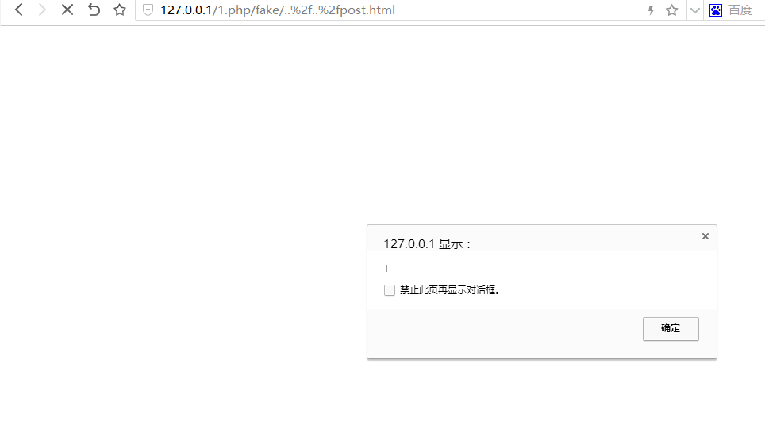
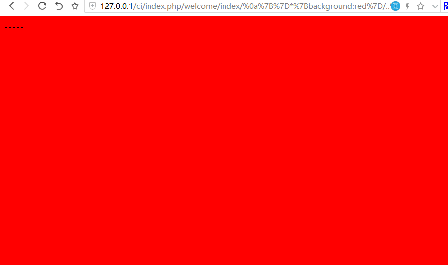

RPO (Relative Path Overwrite) 相对路径覆盖
RPO (Relative Path Overwrite) 相对路径覆盖
什么RPO
RPO就是一种利用服务端与浏览器之间对 url编码 的处理方式不同所发起的攻击
可以导致Web页面引入非法的css文件和javascript文件导致xss
RPO的原理
我们访问http://127.0.0.1/rpo/1/2/4/example.php, 当页面以这种方式引入css或js文件时<link href="../../style.css" rel="stylesheet" type="text/css" />
浏览器加载的是http://127.0.0.1/rpo/1/style.css
但如果将url改为http://127.0.0.1/rpo/1%2f2/4/example.php,服务器会解码%2f为’/‘
继续访问http://127.0.0.1/rpo/1/2/4/example.php而浏览器这会将/1%2f2/最为一段路径
加载http://127.0.0.1/rpo/style.css
利用RPO需要Web页面以相对路径的css或js文件
需要注意的是apache要开启url自动解码需要在配置文件中加入AllowEncodedSlashes On
引入js文件攻击 (1)
../在url中表示上一级的意思利用这个我们可以加载到其他目录下的文件
页面以类似这种方式引入js文件时<script type="text/javascript" src="../jquery.js"></script>
当我们访问http://127.0.0.1/rpo/1/3/..%2f2/4/example.html
如果我们能得知上传文件路径通过RPO让Web页面用js解析我们上传的文件chrome不能将图片解析为js但可以将类似txt,doc,rar解析为js就能触发反射性xss
但这样利用局限很大要求我们能控制上传文件的文件名和文件目录名
引入js文件攻击 (2)
如果网站有上传和下载功能
页面以类似这种方式引入js文件时<script type="text/javascript" src="js/jquery.js"></script>
我们访问http://127.0.0.1/rpo/download.php/..%2findex.php
|
|
http://127.0.0.1/rpo/download.php下载的正是我们上传的恶意文件

引入恶意css文件攻击IE
当页面中提供类似搜索功能,能把搜索的字符串打印出来
页面以类似这种方式引入css文件时<link href="../../styles.css" rel="stylesheet" type="text/css" />http://127.0.0.1/ci/index.php/welcome/index/(string)能打印搜索的字符串
我们访问http://127.0.0.1/ci/index.php/welcome/index/{}*{background:red}/..%2f..%2f..%2f../rpo/example.html
http://127.0.0.1/ci/index.php/welcome/index/{}*{background:red}此页面内的内容则包含了我们的恶意css代码浏览器忽视其他无关的内容正常执行

在IE中可以使用expression()在css中执行js从达到xss攻击
总结
总的来说RPO的攻击还是比较鸡肋的费了大力气也只能进行反射性xss攻击而已我也是看完才知道这么鸡肋QAQ,但思路很有意思搜索功能的利用很有创意
而且看了这么多英文文献突然又感觉过六级有望了QAQ
文献
http://www.mbsd.jp/Whitepaper/rpo.pdf
http://blog.portswigger.net/2015/02/prssi.html
http://blog.innerht.ml/rpo-gadgets/